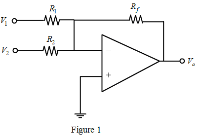
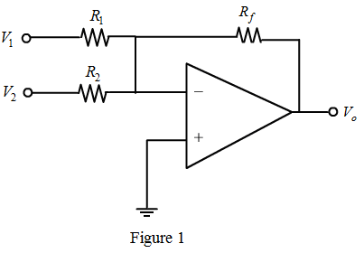
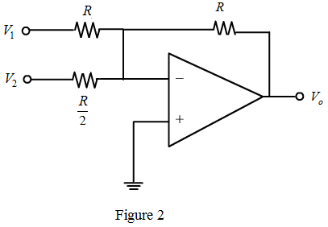
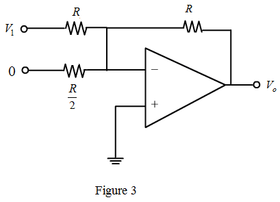
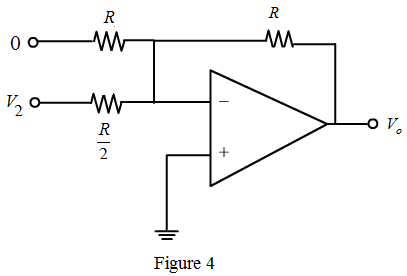

Draw the sketch of the inverting summer with two inputs  and .
and .

Draw the sketch of the inverting summer with two inputs and .

The output of the summer circuit is,
…… (1)
The general output expression for summer circuit is,
…… (2)
Compare equation (2) with equation (1).
And,
Consider that, .
Therefore,
Draw the modified circuit of Figure 1.

Calculate the 3-dB frequency using super position theorem.
Draw the circuit diagram at .

It is known that,
Therefore,
It is known that,
Therefore,
Since, .
Therefore, the gain is,
…… (3)
Equation (3) can be written as,
…… (4)
Where, is the 3-dB angular frequency.
Compare equation (4) with equation (3).
Therefore, the 3-dB frequency, of the gain function is .

Write the expression for gain from Figure (4).
It is know that,
Therefore,
It is know that,
Therefore,
Since, .
Therefore, the gain is,
…… (5)
Equation (3) can be written as,
…… (6)
Where, is the 3-dB angular frequency.
Therefore, the 3-dB frequency, of the gain function is .